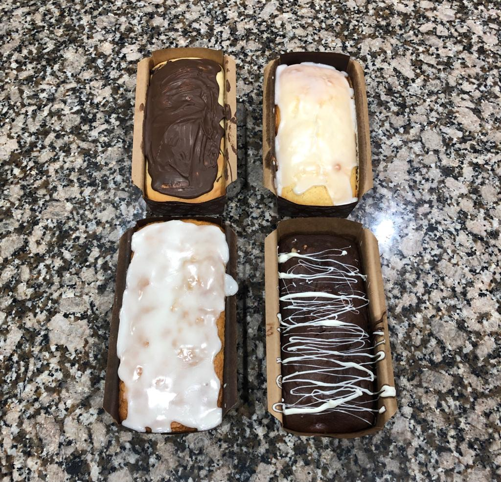

Recetas Faciles

Budin de banana
- 2 bananas muy maduras
- 35 mililitros de aceite de girasol (1/3 de taza)
- 125 gramos de panela o azúcar común (1 taza)
- 1 huevo
- 1 cucharada postre de extracto de vainilla
- 200 gramos de harina (1 taza y 1/2 taza de harina)
- 1 cucharada postre de bicarbonato
- 50 gramos de nueces peladas
Quiero hacer un pedido!